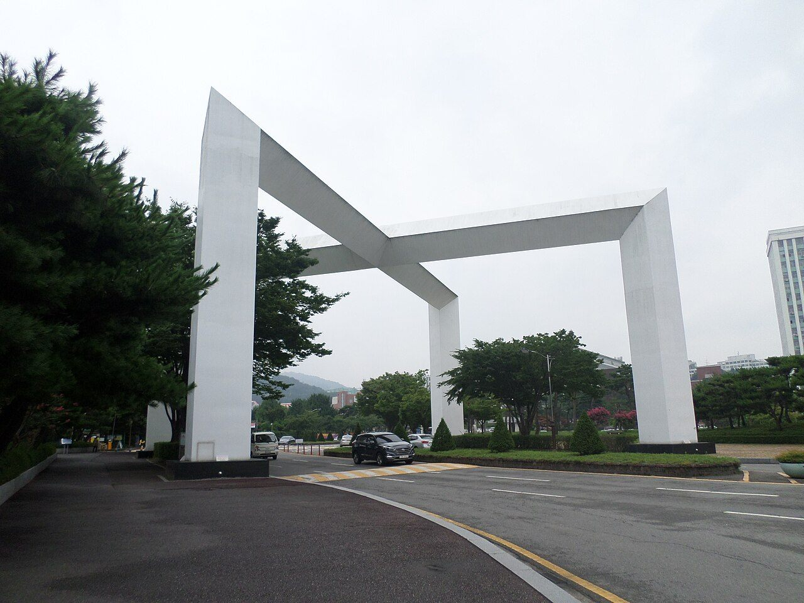

조선대학교(조선대)는 광주 동구 서석동에 자리한 사립 종합대학입니다. 의과대학·치과대학·약학대학을 모두 갖춘 호남권의 대표 사립대학으로, 부속병원인 조선대학교병원과 함께 지역 의료 인력을 오래 길러 왔습니다.
2027학년도 조선대는 수시로 4,700명대를 모집했습니다. 지난해보다 130명 이상 늘어난 규모인데도 경쟁률은 오히려 올랐습니다. 보도에 따르면 지원자는 2만 4천여 명, 전체 경쟁률은 5.05대 1(정원 내 기준 5.23대 1)로 지난해보다 상승했습니다. 원서접수는 9월 7일부터 11일까지 진행돼 이미 마감됐습니다.
올해 조선대에서 눈에 띄는 변화는 세 가지입니다. 지역의사선발전형 신설, 학생부종합전형 선발 인원 확대, 그리고 조선간호대학교와의 간호학과 통합입니다. 이 글은 원서를 낸 고3에게는 남은 일정을, 고1·고2와 중학생 부모님께는 조선대 수시가 어떻게 짜여 있는지를 정리하는 데 초점을 맞췄습니다.
① 학생부교과 — 일반전형과 지역인재, 경쟁률은 비슷하게
조선대 수시의 기둥은 학생부교과전형입니다. 그 안에 일반전형과 지역인재전형이 나란히 있습니다. 올해 경쟁률은 보도된 기준으로 일반전형 5.18대 1, 지역인재전형 5.47대 1이었습니다. 지역인재라고 해서 경쟁이 덜한 것이 아니라, 오히려 조금 높게 나왔다는 점이 눈에 띕니다.
교과 전형에서 눈여겨볼 모집단위로는 반도체광공학과, 용접·접합과학공학과처럼 산업과 바로 연결되는 공학 계열이 높은 경쟁률을 기록했다고 보도됐습니다. '문과·이과' 같은 큰 틀보다 학과 단위로 지원이 몰리는 흐름이 그대로 드러납니다.
교과 전형은 이름 그대로 내신 등급이 곧 지원 가능선을 정합니다. 고1·고2 학생이라면, 3학년 때 쓸 수 있는 카드의 폭을 지금의 2학기 내신이 정하고 있다고 생각하시면 됩니다.
② 새로 생긴 지역의사선발전형 — 진료권을 나눠 뽑습니다
2027학년도의 가장 큰 변화는 지역의사선발전형입니다. 학생부교과전형의 한 갈래로 신설됐고, 의예과에서 스무 명 안팎을 뽑습니다. 독특한 것은 뽑는 방식입니다. 광주·전남을 하나로 보지 않고 진료권별로 인원을 쪼개 선발합니다.
- 목포권과 순천권에서 각각 서너 명
- 나주권에서 두 명, 여수권·해남권·영광권에서 각각 한 명
- 그 밖에 광역권 여섯 명 규모
이 전형의 의예과 경쟁률은 16.89대 1로, 조선대 의예과 관련 전형 가운데 가장 높게 나왔습니다. 정원이 작게 쪼개져 있으니 숫자가 커지는 것은 자연스럽지만, 그만큼 관심이 컸다는 뜻이기도 합니다.
이름에 '지역의사'가 붙은 전형은 졸업 후 해당 지역에서 일정 기간 근무하는 조건과 연결되는 것이 일반적입니다. 지원 자격과 입학 후 의무 조건은 제도마다 다르므로, 관심이 있으시다면 조선대학교 입학처의 모집요강과 관련 안내를 반드시 원문으로 확인하신 뒤 판단하시기 바랍니다.
③ 학생부종합 — 서류전형을 크게 늘렸습니다
학생부종합전형에서도 변화가 있었습니다. 보도된 내용을 정리하면 이렇습니다.
- 서류전형 1,100명대로 확대 — 조선대 수시에서 단일 규모로 가장 큰 축입니다.
- 면접전형 250명대, 농어촌학생전형 110명대로 각각 확대
- 창업인재전형은 폐지
평가 방식도 갈립니다. 면접전형은 1단계에서 서류를 정성평가해 면접 대상자를 가린 뒤, 2단계에서 면접으로 최종 합격자를 정합니다. 반면 서류전형과 농어촌학생전형은 서류 정성평가로 선발합니다. 즉 서류전형에 지원했다면 이미 제출된 학생부가 평가의 거의 전부입니다.
경쟁률에서도 성격 차이가 보입니다. 면접전형은 9.99대 1로 열 명 가까이 몰린 반면, 서류전형은 4.46대 1이었습니다. 뽑는 인원이 훨씬 많은 쪽의 경쟁률이 낮게 형성된 셈입니다.
고1·고2 학생에게 이 구조가 주는 메시지는 분명합니다. 서류전형의 문이 넓어졌다는 것은 곧 지금 학교에서 쌓이는 학생부 기록이 그대로 평가지가 된다는 뜻입니다. 수업 중 발표, 탐구 활동, 독서와 연결된 세부능력 및 특기사항이 3학년 여름에 급조될 수 없다는 점을 기억해 두시면 좋겠습니다.
④ 간호학과 통합과 의·치·약 경쟁률
올해부터 조선대학교 간호학과와 조선간호대학교의 모집인원을 조선대 간호학과로 통합해 선발합니다. 보도에 따르면 정원 외를 포함한 수시 모집인원은 190명대입니다. 간호 계열을 준비하는 학생 입장에서는 지원 창구가 하나로 모인 셈이라, 예년 자료를 그대로 참고하기보다 올해 기준으로 모집단위를 다시 확인해야 합니다.
의·치·약 계열의 올해 경쟁률은 보도된 기준으로 다음과 같습니다.
- 학생부교과 일반전형 — 의예과 13.18대 1, 치의예과 12.71대 1, 약학과 10.58대 1
- 학생부교과 지역인재전형 — 의예과 6.69대 1, 치의예과 7.28대 1, 약학과 9.18대 1
- 학생부종합 면접전형 — 약학과 17.83대 1로 전 모집단위 최고, 의예과 13.00대 1, 치의예과 12.50대 1
같은 의예과라도 일반전형은 13대 1대, 지역인재전형은 7대 1에 못 미치는 수치입니다. 지역인재 자격을 갖춘 광주·전남 학생에게 이 차이가 얼마나 큰 자산인지 보여 주는 대목입니다.
⑤ 호남권 지역인재 — 요건은 2028학년도부터 강화됩니다
지역인재전형은 해당 권역 고등학교 출신에게만 열리는 문입니다. 2027학년도는 해당 권역 고등학교에서 3년 과정을 이수하는 것이 기본 요건입니다.
그런데 2028학년도부터는 중학교 과정부터 해당 지역에서 이수하고 거주하도록 요건이 강화됩니다. 지금 중학생 자녀를 두신 광주·전남 학부모님이라면, 이사나 타 지역 고교 진학을 고민하실 때 이 점을 먼저 따져 보셔야 합니다. 고등학교 3년만 지역에서 다니면 된다는 예전 기준으로 계획을 세우면 자격이 어긋날 수 있습니다.
⑥ 원서 이후 달력 — 가장 가까운 날은 서류 제출 마감
보도된 일정을 날짜 순으로 정리하면 이렇습니다.
- 9월 18일 오후 5시 — 서류 제출 마감. 원서접수가 끝났다고 할 일이 끝난 것이 아닙니다. 제출 서류가 있는 전형에 지원했다면 가장 급한 날짜입니다. 본인이 제출 대상인지부터 입학처 공지로 확인하십시오.
- 10월 15일~16일 — 학생부교과 군사학과전형 2단계 평가
- 10월 24일·10월 31일 — 실기·실적전형 실기고사
- 11월 17일 — 합격자 발표(1차)
- 11월 28일~29일 — 학생부종합 면접전형 면접고사
- 12월 18일 — 최종 합격자 발표
면접이 수능 이후에 있다는 점이 중요합니다. 수능을 마치고 나서 준비할 시간이 있다는 뜻이기도 하고, 반대로 수능 직후의 마음 상태가 면접까지 이어진다는 뜻이기도 합니다. 면접전형에 지원한 학생이라면 1단계 결과 발표일을 달력에 적어 두고, 그날부터 자기 학생부를 다시 읽는 일정을 잡아 두시길 권합니다.
정리하면
조선대 2027 수시는 규모를 키우면서 문을 여러 갈래로 나눈 해였습니다. 교과는 일반과 지역인재에 지역의사선발전형이 더해졌고, 종합은 서류전형을 크게 늘려 학생부 자체로 승부하는 길을 넓혔습니다. 간호학과는 통합으로 창구가 하나가 됐습니다.
어느 길이든 출발점은 같습니다. 내신 등급과 학생부에 남은 기록입니다. 고3이라면 남은 일정을 놓치지 않는 것이, 고1·고2라면 이번 학기 성적과 수업 안에서의 활동을 지키는 것이 지금 할 수 있는 전부이자 가장 확실한 준비입니다.
와와 학습코칭센터에서는 아이의 내신과 과목별 상태를 진단해, 목표 대학·모집단위의 기준에 맞춰 지금 무엇부터 채워야 할지 함께 정리해 드립니다. 가까운 센터에서 무료 상담을 받아 보실 수 있습니다.
※ 본 글의 모집규모·전형 구성·경쟁률·일정은 조선대학교의 2027학년도 수시모집 관련 언론 보도를 바탕으로 정리했으며, 인원 수치는 이해를 돕기 위해 범위로 표기했습니다. 특히 전형별 수능최저학력기준은 확인하지 못해 이 글에 담지 않았습니다. 그 밖에 학생부 반영 교과와 학년별 반영 비율, 학생부종합 서류평가의 세부 항목, 면접의 형식과 배점, 1단계 선발 배수, 지역의사선발전형의 지원 자격과 입학 후 의무 조건, 통합된 간호학과의 모집단위별 세부 인원, 지역인재전형의 자격 요건 세부 규정도 확정 표기하지 않았습니다. 사진은 과거에 촬영된 것으로 현재 모습과 다를 수 있습니다. 반드시 조선대학교 입학처의 2027학년도 수시모집요강 원문에서 본인 지원 모집단위 기준으로 최종 확인하시기 바랍니다.